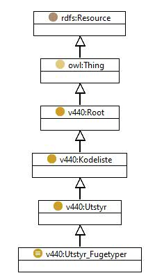

https://ontologi.atlas.vegvesen.no/v440/core/v440-owl#Utstyr_Fugetyper
Class v440:Utstyr_Fugetyper

rdf:type
-
 |
owl:Class |
|
rdfs:label
-
 |
Joint types
|
-
 |
Fugetyper
|
|
rdfs:subClassOf
-
|
owl:oneOf
-
 |
[v440:Utstyr_Fugetyper_apen_fuge_med_kantforsterkning,
v440:Utstyr_Fugetyper_Flerelementfuge_gummi_Maurer,
v440:Utstyr_Fugetyper_Armert_gummifuge_Transflex,
v440:Utstyr_Fugetyper_Fingerfuge_annen,
v440:Utstyr_Fugetyper_Gummifuge_Honel,
v440:Utstyr_Fugetyper_Flerelementfuge_gummi_Delastiflex_DL,
v440:Utstyr_Fugetyper_Gummifuge_Maurer,
v440:Utstyr_Fugetyper_Stalplatefuge_T-stal,
v440:Utstyr_Fugetyper_Annen_gummifuge,
v440:Utstyr_Fugetyper_Stalplatefuge_slepeplate,
v440:Utstyr_Fugetyper_Fingerfuge_apen,
v440:Utstyr_Fugetyper_Annen_stalplatefuge,
v440:Utstyr_Fugetyper_Stalplatefuge,
v440:Utstyr_Fugetyper_Annen_armert_gummifuge,
v440:Utstyr_Fugetyper_Gummifuge_slange_ACME,
v440:Utstyr_Fugetyper_Asfaltfuge,
v440:Utstyr_Fugetyper_Gummifuge_Delastiflex_MT,
v440:Utstyr_Fugetyper_Fingerfuge_Cipec-tett,
v440:Utstyr_Fugetyper_Gummifuge,
v440:Utstyr_Fugetyper_Armert_gummifuge_Waboflex,
v440:Utstyr_Fugetyper_Flerelementfuge_gummi,
v440:Utstyr_Fugetyper_Annen_apen_fuge,
v440:Utstyr_Fugetyper_Fingerfuge_Stup_FT-tett,
v440:Utstyr_Fugetyper_Flerelementfuge_gummi_Steelflex,
v440:Utstyr_Fugetyper_Armert_gummifuge,
v440:Utstyr_Fugetyper_Fingerfuge_Stup_FT-apen,
v440:Utstyr_Fugetyper_Fingerfuge,
v440:Utstyr_Fugetyper_Rulle_glidefuge_Vegvesenets_type,
v440:Utstyr_Fugetyper_Gummifuge_Fel-Span,
v440:Utstyr_Fugetyper_Stalplatefuge_slepeplate_fjaerbelastet,
v440:Utstyr_Fugetyper_apen_fuge_uten_kantforsterkning,
v440:Utstyr_Fugetyper_Annen_rulle_glidefuge,
v440:Utstyr_Fugetyper_Fingerfuge_Cipec-apen,
v440:Utstyr_Fugetyper_Gummifuge_Cipec,
v440:Utstyr_Fugetyper_Annen_flerelementfuge_gummi,
v440:Utstyr_Fugetyper_Rulle_glidefuge,
v440:Utstyr_Fugetyper_Flerelementfuge_gummi_Honel,
v440:Utstyr_Fugetyper_Annen_fugetype,
v440:Utstyr_Fugetyper_Gummifuge_Tensalastic,
v440:Utstyr_Fugetyper_Gummifuge_Tensa-Grip,
v440:Utstyr_Fugetyper_Rulle_glidefuge_Demag,
v440:Utstyr_Fugetyper_Flerelementfuge_gummi_Tensalastic,
v440:Utstyr_Fugetyper_Asfaltfuge_Thormajoint,
v440:Utstyr_Fugetyper_apen_fuge,
v440:Utstyr_Fugetyper_Asfaltfuge_Nodest,
v440:Utstyr_Fugetyper_Fingerfuge_tett]
|
|
v440:avsnitt
-
 |
V-8.4
|
|
v440:kapittel
-
|
|
V-8
|
|
v440:kode
-
|
|
-
|
|
|
Instances |
|
v440:Utstyr_Fugetyper_Annen_apen_fuge, v440:Utstyr_Fugetyper_Annen_armert_gummifuge, v440:Utstyr_Fugetyper_Annen_flerelementfuge_gummi, v440:Utstyr_Fugetyper_Annen_fugetype, v440:Utstyr_Fugetyper_Annen_gummifuge, v440:Utstyr_Fugetyper_Annen_rulle_glidefuge, v440:Utstyr_Fugetyper_Annen_stalplatefuge, v440:Utstyr_Fugetyper_apen_fuge, v440:Utstyr_Fugetyper_apen_fuge_med_kantforsterkning, v440:Utstyr_Fugetyper_apen_fuge_uten_kantforsterkning, v440:Utstyr_Fugetyper_Armert_gummifuge, v440:Utstyr_Fugetyper_Armert_gummifuge_Transflex, v440:Utstyr_Fugetyper_Armert_gummifuge_Waboflex, v440:Utstyr_Fugetyper_Asfaltfuge, v440:Utstyr_Fugetyper_Asfaltfuge_Nodest, v440:Utstyr_Fugetyper_Asfaltfuge_Thormajoint, v440:Utstyr_Fugetyper_Fingerfuge, v440:Utstyr_Fugetyper_Fingerfuge_annen, v440:Utstyr_Fugetyper_Fingerfuge_apen, v440:Utstyr_Fugetyper_Fingerfuge_Cipec-apen, v440:Utstyr_Fugetyper_Fingerfuge_Cipec-tett, v440:Utstyr_Fugetyper_Fingerfuge_Stup_FT-apen, v440:Utstyr_Fugetyper_Fingerfuge_Stup_FT-tett, v440:Utstyr_Fugetyper_Fingerfuge_tett, v440:Utstyr_Fugetyper_Flerelementfuge_gummi, v440:Utstyr_Fugetyper_Flerelementfuge_gummi_Delastiflex_DL, v440:Utstyr_Fugetyper_Flerelementfuge_gummi_Honel, v440:Utstyr_Fugetyper_Flerelementfuge_gummi_Maurer, v440:Utstyr_Fugetyper_Flerelementfuge_gummi_Steelflex, v440:Utstyr_Fugetyper_Flerelementfuge_gummi_Tensalastic, v440:Utstyr_Fugetyper_Gummifuge, v440:Utstyr_Fugetyper_Gummifuge_Cipec, v440:Utstyr_Fugetyper_Gummifuge_Delastiflex_MT, v440:Utstyr_Fugetyper_Gummifuge_Fel-Span, v440:Utstyr_Fugetyper_Gummifuge_Honel, v440:Utstyr_Fugetyper_Gummifuge_Maurer, v440:Utstyr_Fugetyper_Gummifuge_slange_ACME, v440:Utstyr_Fugetyper_Gummifuge_Tensa-Grip, v440:Utstyr_Fugetyper_Gummifuge_Tensalastic, v440:Utstyr_Fugetyper_Rulle_glidefuge, v440:Utstyr_Fugetyper_Rulle_glidefuge_Demag, v440:Utstyr_Fugetyper_Rulle_glidefuge_Vegvesenets_type, v440:Utstyr_Fugetyper_Stalplatefuge, v440:Utstyr_Fugetyper_Stalplatefuge_slepeplate, v440:Utstyr_Fugetyper_Stalplatefuge_slepeplate_fjaerbelastet, v440:Utstyr_Fugetyper_Stalplatefuge_T-stal |
Generated with TopBraid Composer
by TopQuadrant, Inc.